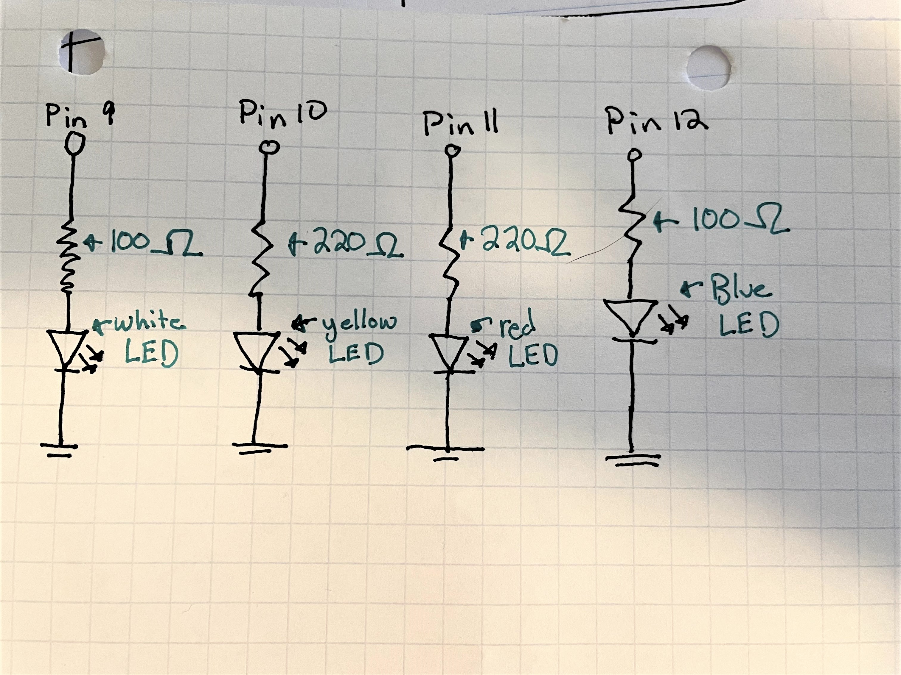
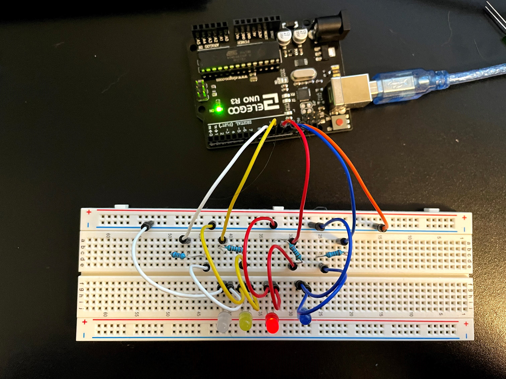
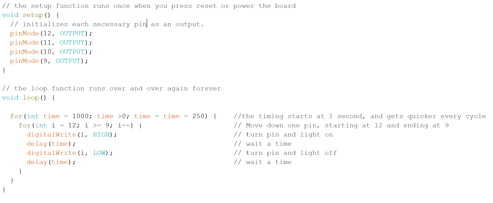

Assignment 1: Blink!
The Schematics

I displayed 4 lEDs (white, yellow, red, and blue), each tied to their own arduino pin. For the red and yellow pins, I used a 220 ohm resistor, and for the white and blue LEDs I used a 100 ohm resistor. Heres the math:
Red and Yellow LEDs
Voltage from arduino: 5 volts. LED voltage drop: 1.8 volts. Max current: 30 mA
V=IR
5-1.8 = .03 * R
R = 3.2/0.03 = 106.66 minimum resistor
Therefore, the 220 ohm resistor is best!
White and Blue LEDs
Voltage from arduino: 5 volts. LED voltage drop: 3.3 volts. Max current: 30 mA
V=IR
5-3.3 = .03 * R
R = 1.7/0.03 = 56.66 minimum resistor
Therefore, the 100 ohm resistor is best!
The Wiring

Each color of wire is related to the color LED. The oragne wire at the end connects to ground.
The Code

The Gif

The lights go in order: blue, red, yellow, white. At first they go slowly, one second at a time, but each new cycle they get faster, untill it's too fast and they slow down again. The gif processors I found couldn't quite capture the entire process, which took about 30 second, so here is a smaller sample.